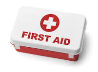
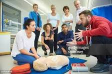
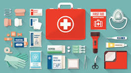

First aid is the immediate care given to a person who has been injured or has suddenly become ill. It includes simple but essential medical steps such as cleaning wounds, applying bandages, or performing CPR. The goal of first aid is to prevent the situation from getting worse and to help the person until full medical treatment can be provided. First aid does not replace professional care, but it can save lives when applied quickly and correctly. Everyone should know these basic skills to help others in emergencies.
In an emergency, the first step is to stay calm. Check the surroundings for safety, then call for professional medical help. While waiting, you can help by applying pressure to wounds to stop bleeding, making the person comfortable, or giving CPR if necessary. Do not move anyone with a suspected back or neck injury. Every second counts, so act confidently and follow first aid techniques you’ve learned. Quick and correct action can prevent a situation from becoming worse.
A first aid kit should include items like bandages, antiseptic wipes, adhesive tape, scissors, gloves, a thermometer, pain relievers, and a CPR mask. It’s also helpful to include a first aid manual. Regularly check your kit to make sure items are not expired. Keep one at home, in your car, and at work so you are always prepared. A well-organized first aid kit helps you act quickly during injuries or medical situations.
